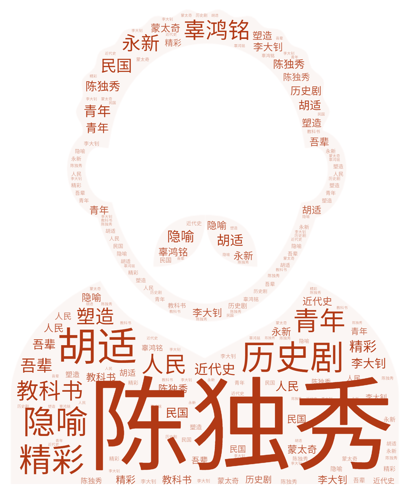
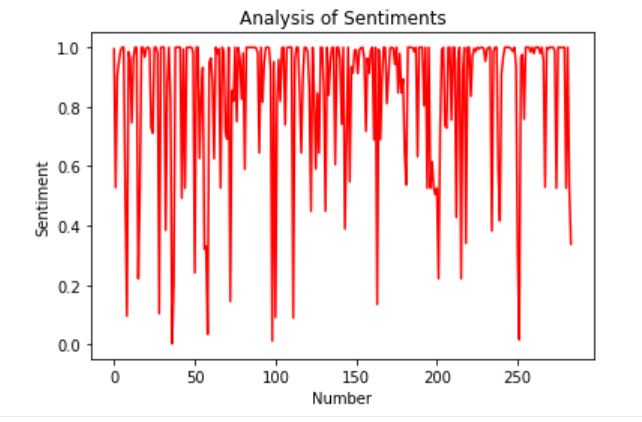

主页
(current)
在豆瓣得到的数据
下图显示的是豆瓣关于觉醒年代热评中的热词
可以看出对陈独秀的讨论最多，其次是胡适、辜鸿铭和李大钊等
从词云中的情绪可以看出，观众普遍认为觉醒年代这部电视剧极为精彩好看
从词云中对该剧的评价可以看出，观众大多觉得觉醒年代是一部教科书般的历史剧，对该剧评价极高

该数据显示的是豆瓣中对于觉醒年代观众评论中的情感分析
可以看出情感指数在0.6以上分布较多，由此可知，观众对该剧的好评占绝大多数，
说明《觉醒年代》这部剧是一部非常精彩、非常有意义的电视剧
